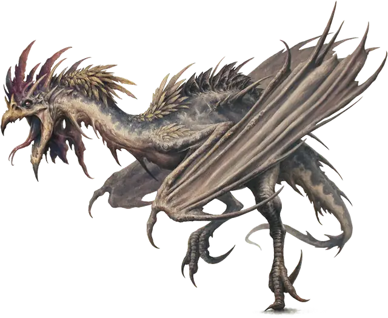

Куролиск
Cockatrice
Маленькое Чудовище, без мировоззрения

Класс Защиты 11 Инициатива +1 (11)
Хиты 22 (5к6 + 5)
Скорость 20 футов, Полёта 40 футов
| мод | спас | ||
|---|---|---|---|
| СИЛ | 6 | −2 | −2 |
| ЛОВ | 12 | +1 | +1 |
| ТЕЛ | 12 | +1 | +1 |
| мод | спас | ||
|---|---|---|---|
| ИНТ | 2 | −4 | −4 |
| МДР | 13 | +1 | +1 |
| ХАР | 5 | −3 | −3 |
Иммунитеты Окаменевший
Чувства Тёмное зрение 60 футов, пассивное Восприятие 11
Языки нет
Опасность 1/2 (100 опыта; БВ +2)
Действия
Окаменяющий клевок. Бросок рукопашной атаки: +3, досягаемость 5 фт. Попадание: 3 (1к4 + 1) Колющего урона. Если цель является существом, она подвергается следующим эффектам: Спасбросок Телосложения: Сл 11. Первый провал: Цель получает состояние Опутанный. Цель повторяет спасбросок в конце своего следующего хода, если она всё ещё Опутана таким образом, оканчивая эффект на себе при успехе. Второй провал: Цель получает состояние Окаменевший вместо состояния Опутанный на 24 часа.
Бонус мастерства +2
Среда обитания Луга
Сокровища Отсутствуют
Куролиски
Превращающие в камень проклятые птицы
Куролиски похожи одновременно на взбешённых петухов и голодных рептилий. Своим укусом они превращают жертв в камень, поэтому даже лёгкий удар их клюва может стать смертельным.
Как правило, куролиски пытаются захватить живописные строения, такие как развалины или уединённые фермы, и превратить их в свой насест.